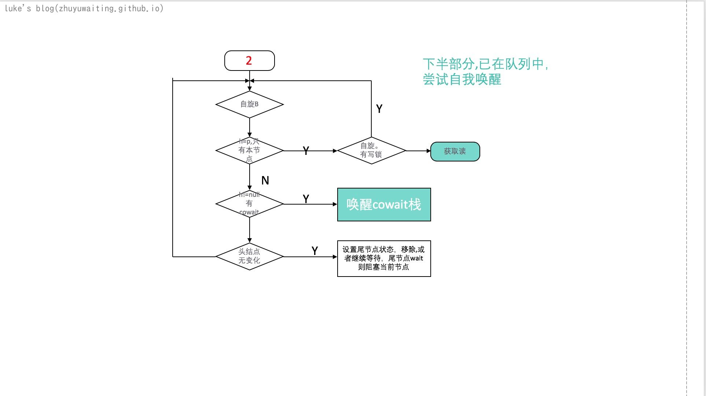
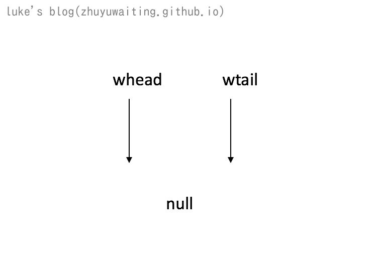
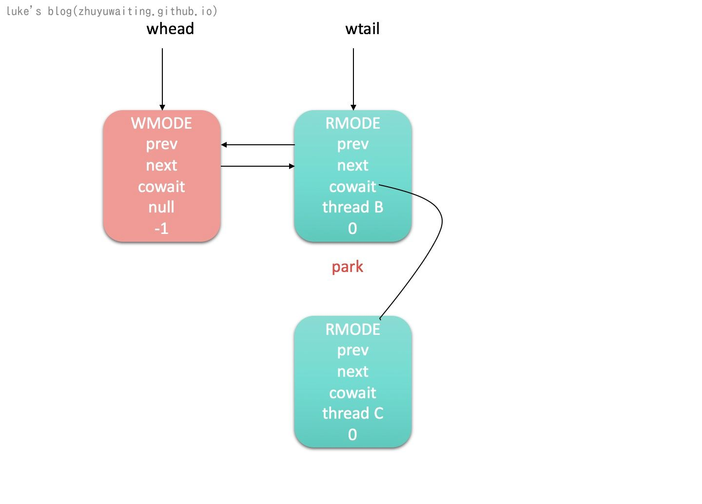
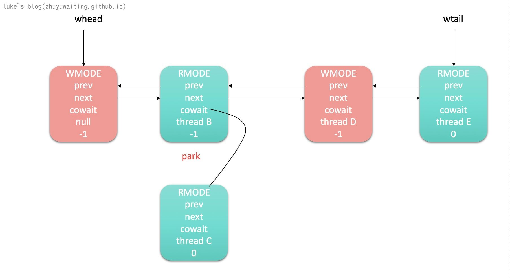

前言：
StampedLock是对读写锁ReentrantReadWriteLock的增强，该类提供了锁的基础功能，优化了读锁，写锁的访问，同时使读写锁可以相互转化，更细粒度控制并发。本文就来看看StampedLock的使用和实现。
为啥引入StampedLock
ReentrantReadWriteLock 利用Aqs实现了读写锁的功能，但是其默认是非公平的，非公平的情况下，对于读多写少的情况，很容易产生饥饿的现象，也就是写锁始终获取不到资源。
非公平锁尝试获取锁资源的时候，直接尝试能不能获取。
公平锁是优先放入sync队列中。由队列进行调度
如果使用公平的ReentrantReadWriteLock对于一些频繁获取释放锁的场景会非常耗费性能，因为所有线程都必须通过Aqs的sync队列来进行调度，即使当前线程本可以获取资源，也需要等待Aqs来进行调度。
故而引入了StampedLock锁，来优化读写锁。
1 | StampedLocks are designed for use as internal utilities in the |
- 该类主要设计是用于内部设计线程安全组件的工具类。
- they are not reentrant. 非重入锁 （如果一个线程已经持有了写锁，再去获取写锁的话就会造成死锁）
- 如果被反序列化，则会重新初始化lock的状态，所以不可以用于远程锁。
- stamp标志最长为一年，锁持有时间不能超过1年。
使用示例
1 | class Point { |
源码分析
数据结构是一切的基础
View Code
1 | // 可用CPU数量，用于自旋控制 |

数据结构：

说明：
- StampedLock 内部是使用Long来保存各种操作变量，进行二进制转化判断
- StampedLock 内部结构是一个双向链表加栈（单链表实现）的结构
重要方法：
readLock
1 | public long readLock() { |

说明：
- ABIT = 1111 1111 读锁最大值是 0111 1111 如果 s&ABITS < RFULL(0111 1111) 表示的是 s=0* ** 无写锁，读锁不超过最大位数(写锁只能有一个).
- 如果没有写锁且读锁不超过126个，则读锁可以直接尝试CAS获取，失败在尝试acquire
acquireRead
实话说 ，这个方法复杂到一定的程度了。
View Code
1 | /** |


writeLock
1 | public long writeLock() { |
说明:
- ABITS = 1111 1111 state & ABITS = 0
acquireWrite
View Code
1 | /** |
读写锁获取总结
读写锁获取的关键点主要是：
- 如果当前可获取，直接尝试获取 （读：无写锁占有则可获取， 写：无锁占有则可获取）
- 直接获取失败，acquire尝试。
- 队列无元素。表示只有一个线程占有。乐观锁假定会很快释放，所以自旋等待锁释放，直接获取
- 队列有元素需要加入到队列中。涉及初始化首节点
- 已加入队列中，如果现在只有自己在队列中，则乐观锁假定会很快释放，所以自旋等待锁释放尝试获取
- 如果自旋过程中，读锁节点变成了首节点，则唤醒该节点cowait栈中的所有节点
- 自旋节点中，如果首节点无变动，表示没有锁释放，进入悲观，依次删除超时cancel的节点，然后还有前驱，则park

unlockRead
1 | // 锁释放 |
说明：
- 自旋
- 状态一致性检测
- 读锁的存储有两个地方 state低7位 和readeroverflow字段，需要判断从哪里去减除
- 如果读只有1个了，则唤醒下一个节点
unlockWrite
1 | // 释放写锁 |
说明：
- 队列有节点，则释放队列中等待的节点
tryOptimisticRead
1 | public long tryOptimisticRead() { |
说明： tryOptimisticRead 和 validate放在一起其实是表示当前有没有写锁，如果没有写锁，则读取数据就不加锁 直接读取。
注意 loadFence : 读屏障，确保之前的写入都已经写进去了 不会出现多线程缓存等问题影响。如果中间一直无写锁，则直接读 不加锁
示例。
假设现在有5个线程 thread A ,thread B, thread C, thread D, thread E
1 | //ThreadA调用writeLock, 获取写锁 |
参考锁流程：
- ThreadA 获取写锁，无竞争，直接获取。

- ThreadB 获取读锁，不可直接获取，队列无元素，加入队列中等待。由于队列只有他自己，所以做
- ThreadC 获取readLock，不可直接获取，队列有元素，尾节点是读节点，加入cowait

- ThreadD 获取写锁,不可直接获取，加入队列等待
- ThreadE 获取读锁,不可直接获取，对尾不是读，加入队列

ThreadA 释放 首先首节点状态设置为-1 ，然后unpark Thread B，由于 Tread B 有cowait
由于ThreadB 中的自旋会 释放头结点 唤醒 cowait 并且解除 cowait链接ThreadB 释放，ThreadD获取写

ThreadD 释放 ThreadE 获取读
说明: 流程大致是这样的流程，但是此处由很多细节没有说明，就是自旋的那个地方释放，从哪里开始执行，执行后做了什么。
这个可以具体看代码细节，获取锁的地方有这么的自旋操作，就是希望尽量减少锁本身带来的开销，以及起来之后能够较快唤醒相关线程。
总结
StampedLock代码上来说，可以说非常复杂，其将CAS，自旋，乐观锁，悲观锁玩的非常溜。通过各种自旋操作，乐观，悲观判定，来减少锁本身带来的开销。
- StampedLock 通过state 低7位表示读锁， 第8位表示写锁。
- StampedLock 没有进行读写锁重入的判定，线程重入可能有死锁风险
- StampedLock 有三种模式，读，写，优化读。 所谓的优化读，是判定当前是否有写锁，没有写锁就不加锁 直接读取。 这里利用了内存屏障的概念可以参考并发理论一文
- StampedLock 为了优化锁本身开销，有大量自旋操作，和乐观锁判定操作。
参考
https://segmentfault.com/a/1190000015808032?utm_source=tag-newest#item-3-10